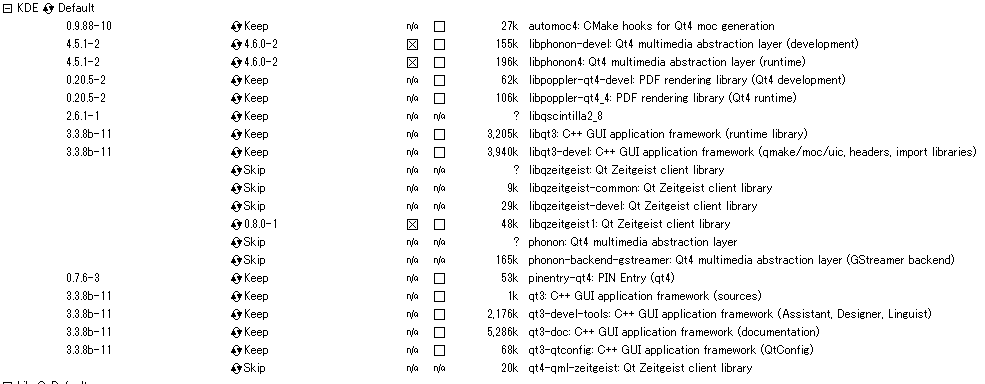

PyQt4 install for Cygwin
きっとCygwinユーザーがCygwinでmakeするのはもう嫌と感じるのはもう運命だと思う。
というわけで、PyQt4は欲しくなったのでインストールする。
欲しくなった原因はMkdPreview.vim。
先に書いておくが、全部自前makeしないといけない。
1. Qt4入ってる？
$ ls /usr/lib | grep qt
qt4があれば入ってる。自分は入ってた。フルインストールしたら多分入ってるっぽい。
2. sip
PyQt4を入れる前に、sipなるものを入れる必要がある。
Riverbank | Software | SIP | What is SIP?
読んでみると、C/C++のライブラリ、ここではQtとPythonのバインディングをするツールであることがわかる。
tarファイルをダウンロード(Riverbank | Software | SIP | SIP Download)してmakeする。
$ tar -zxvf sip-4.14.6.tar.bz
$ cd sip-4.14.6
$ python configure.py
$ make
$ make install
意外とすんなり。
3. PyQt4
後は、PyQt4をダウンロードしてmakeするだけ。
Riverbank | Software | PyQt | PyQt4 Download
Linux, UNIX sourceを選択。
その前に、qmakeのパスが通っているか確認。通ってなければPATHに追加。
$ qmake
command not found.
$ vim ~/.zshrc
PATH=(自分の設定):$PATH:/usr/lib/qt4/bin
$ source ~/.zshrc
使ってるシェルは人によって違う。自分はzsh。
$ tar -zxvf PyQt-x11-gpl-4.10.1.tar.gz
$ cd PyQt-x11-gpl-4.10.1
$ python configure.py -g
$ make
$ make install
ここでの注意点は２つあって
- python configure.py に-gオプションをつける。オプションなして実行すると-gか-kのどちらかつけろといわれるので、-gをつける。
めっっっっっっっっっちゃ時間かかる。ちょっと焦るくらい終わらないので、時間のあるときにやる。
というわけで１時間後。
recipe for target `_qt.dll' failed
ん？
recipe for target `_qt.dll' failed
ん？
見たくない現実が。１時間返せ。返してくれCygwin。
-g / -kオプションを適当に選択してしまったのが悪いっぽい。と言うかなんだこのオプション。
-g / -k -> なんかGNOMEかKDEっぽいな。(調べてないので本当にどうかは知りません)
CygwinのQtってGNOME？KDE？setup.exeを見てみよう。
QtはKDEの中にしかありません。
オプションを-kにして再度チャレンジ。
小一時間後うまいことmakeできたのでmake install。
4. import PyQt4
$ python
>>> import PyQt4
>>>
キマシタワー。
5. Cygwin以外 & 雑記
Ubuntuではapt-getでインストール出来るみたい。
Wind And Tide: PyQt4をubuntuにインストールする
pip search pyqtしたところPyPiにあるみたいだった。。。
まさかとは思うが、自前makeしなくても良かったの。。。ってなった。今度試してみよう。
PySideをpipでインストールしようとしたらhogehogeという記事があったので何かしら参考になるかもしれない。
Pythonbrew環境下にPySideをインストールしようとしたらはまった - kk6のメモ帳*
個人的に使うならPySide使ってみたかったから今度やってみよう。